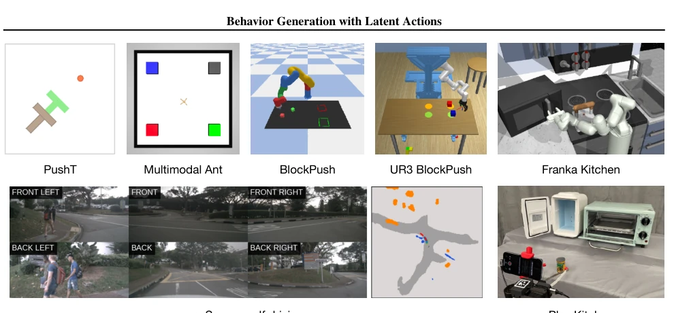
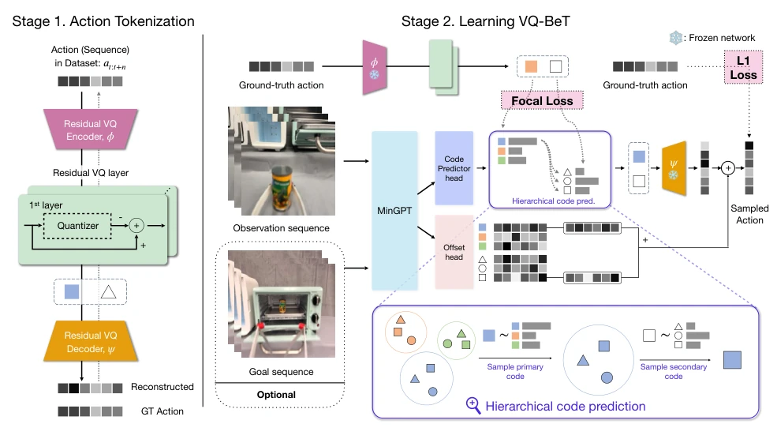
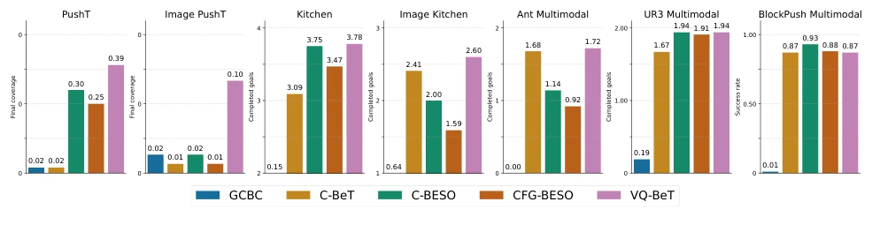
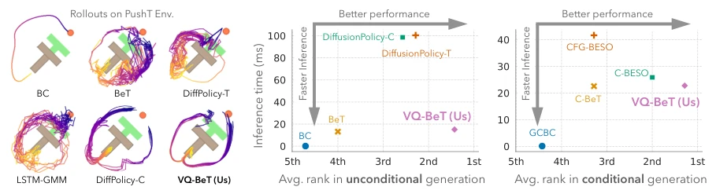
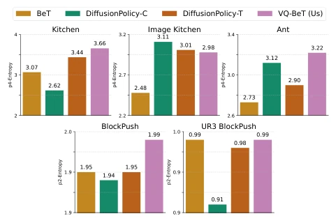
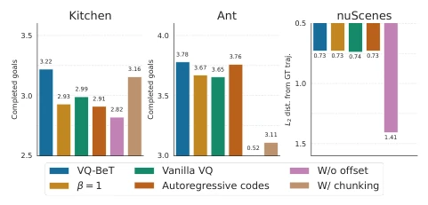
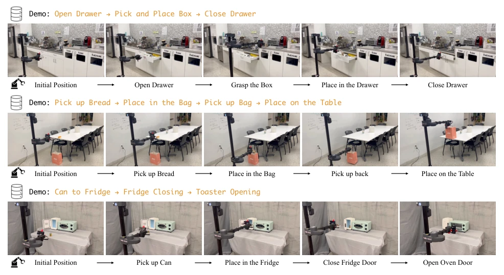
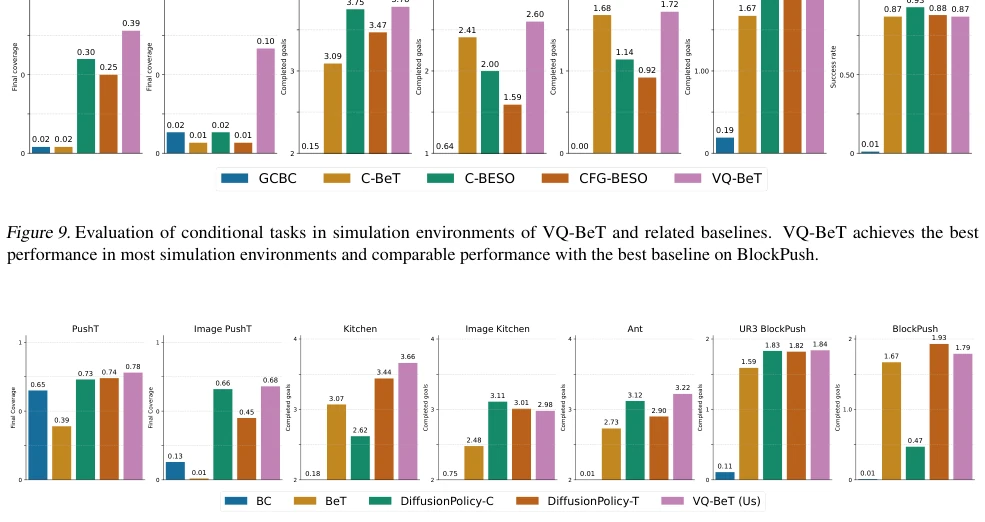
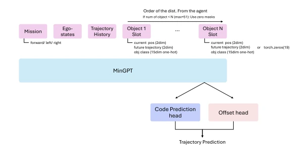
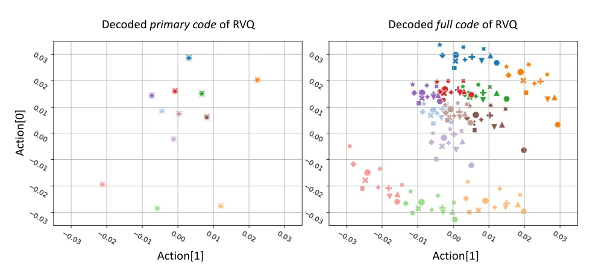

This paper delivers a "dimensionality reduction strike" to the field of behavior cloning. BeT uses k-means tokenization, which collapses in high-dimensional action spaces, while Diffusion is too slow. VQ-BeT replaces k-means with Residual Vector Quantization (Residual VQ), converting continuous actions into discrete tokens, then predicts using a Transformer. The results are quite impressive, working across simulation, autonomous driving, and real robots, with inference speed 5 times faster than Diffusion. However, in real robot experiments, Diffusion barely caught up after parameter tuning, and VQ-BeT's residual layer weight design seems somewhat esoteric, collapsing when β=1. Overall, it is a solid engineering improvement, but the "generalizability" is slightly overhyped, as it is still based on behavior cloning and does not solve the fundamental problem of missing rewards.
研究动机Motivation
具身智能的核心难点在于动作生成的多模态性和长时序依赖。现有 Behavior Transformer (BeT) 用 k-means 聚类离散化动作 (Shafiullah et al., 2022)，但在高维动作空间或长序列下，k-means 无法捕捉复杂分布，且缺乏梯度信息，导致长程动作建模能力差。Diffusion Policy (Chi et al., 2023) 虽能建模多模态，但需要多步去噪，推理慢。此外，传统行为克隆缺乏对物理约束的硬约束，小误差会导致级联失败。因此，需要一种既能捕捉多模态模式，又能高效推理的生成模型。
The core difficulty of embodied intelligence lies in the multimodality and long-term dependencies of action generation. Existing Behavior Transformer (BeT) uses k-means clustering to discretize actions (Shafiullah et al., 2022), but under high-dimensional action spaces or long sequences, k-means cannot capture complex distributions, and lacks gradient information, resulting in poor long-range action modeling capabilities. Diffusion Policy (Chi et al., 2023) can model multimodality, but requires multi-step denoising, making inference slow. Furthermore, traditional behavior cloning lacks hard constraints on physical constraints, where small errors lead to cascading failures. Therefore, a generative model that can capture multimodal patterns and enable efficient inference is needed.

Figure 3. Visualization of the environments (simulated and real) where we evaluate VQ-BeT. Top row contains PushT (Chi et al., 2023), Multimodal Ant (Brockman et al., 2016), BlockPush (Florence et al., 2022), UR3 BlockPush (Kim et al., 2022), Franka Kitchen (Gupta et al., 2019), and bottom row contains nuScenes self-driving (Caesar et al., 2020), and our real robot environment.
VQ-BeT is divided into two stages. The first stage trains a Residual VQ-VAE as an action tokenizer. The Encoder maps action sequences to latent vectors, quantizing layer by layer through Nq codebook layers (Residual VQ), with the final action reconstructed by summing multi-layer codebook vectors. The second stage trains a Transformer to predict these discrete codes. The model takes observation sequences as input and outputs probability distributions for primary codes and secondary codes, using Focal Loss weighting (β adjusts primary and secondary codebook weights). Additionally, an Offset Head is added to predict continuous offsets to restore action fidelity. The final action is reconstructed by the decoder from discrete codes plus offsets. This architecture supports conditional (Goal) and unconditional generation by freezing the VQ network and training only the Transformer part. The loss function includes code prediction loss and offset loss, ensuring discretized actions can be precisely reconstructed. The residual structure allows the primary codebook to cluster coarse-grained patterns, while the secondary codebook refines details, balancing expressiveness and computational cost.

Figure 2. Overview of VQ-BeT, broken down into the residual VQ encoder-decoder training phase and the VQ-BeT training phase. The same architecture works for both conditional and unconditional cases with an optional goal input. In the bottom right, we show a detailed view of the hierarchical code prediction method.

Figure 9. Evaluation of conditional tasks in simulation environments of VQ-BeT and related baselines. VQ-BeT achieves the best performance in most simulation environments and comparable performance with the best baseline on BlockPush.
Tested on 7 simulation environments (PushT, Kitchen, Ant, etc.) and the nuScenes autonomous driving benchmark. In unconditional generation, VQ-BeT outperforms BC and BeT in 5/7 environments; in conditional generation, it outperforms GCBC and C-BeT in 6/7. Entropy analysis shows its multimodal capture capability is stronger. Inference speed is 5 times faster than Diffusion Policy in simulation and 25 times faster on real robots. Real robot experiments (Stretch robot) show a 73% higher success rate in long-term temporal tasks (such as opening a refrigerator, placing objects) compared to Diffusion Policy. Ablation studies indicate that residual VQ layers and Offset Head are crucial, and the β parameter has a significant impact.

Figure 1. Qualitative and quantitative comparison between VQ-BeT and relevant baselines. On the left, we can see trajectories generated by different algorithms while pushing a T-block to target, where VQ-BeT generates smooth trajectories covering both modes. On the right, we show two plots comparing VQ-BeT and relevant baselines on unconditional and goal-conditional behavior generation. The comparison axes are (x-axis) relative success represented by average rank on a suite of seven simulated tasks, and (y-axis) inference time.

Figure 4. A comparison between the behavior entropy of the algo- rithms, calculated based on their task completion order, on five of our simulated environments.

Figure 5. Summary of our ablation experiments. The five different axes of ablation is described in Section 4.6.

Figure 6. Visualization of the trajectory VQ-BET generated in a long-horizon real world environment. Each demo consists of three to four consecutive tasks. Please refer to Table 6 for the success rates for each task.

Figure 10. Evaluation of unconditional tasks in simulation environments of VQ-BeT and related baselines. VQ-BeT achieves the best performance in most simulation environments and comparable performance with the best baseline on BlockPush and Image Kitchen.

Figure 11. Overview of VQ-BeT for autonomous driving.
其他图片Other Figures

Figure 8. Action centroids of primary codes and full combination of the codes. On the left, we represent centroids of the raw action data obtained by decoding (total of 12) primary codes learned from Blockpush Multimodal dataset. On the right, we show the decoded action of the centroids corresponding to all 144 possible combinations of full the codes. We can see that the primary codes, represented by different colors in each figure, are responsible for clustering in the coarse range, while full-code representation provides further finer-grained clusters with secondary codes.